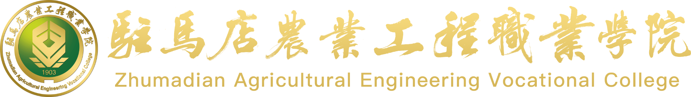

走进食品从农产品原料、加工生产、质量控制到市场放行的完整链条，体验食品智能加工技术与食品质量与安全的专业协同。
食品工厂决策能手
选择一个入口，开始互动体验、了解专业或开展企业合作交流。
进入模拟食品工厂，完成加工设计、质量安全与协同决策任务，生成100分制能力报告。
认识食品智能加工技术与食品质量与安全在食品生产链中的岗位职责和能力方向。
反馈岗位、能力、实习就业和培训需求，建立人才培养与产业需求的沟通渠道。
实习就业、企业导师、员工培训、课程共建、案例开发和技术服务。
了解互动信息、企业联系信息的使用范围和隐私保护原则。
加工岗位创造产品价值，质量安全岗位守住安全与合规底线。
完成10项食品工厂任务，获得专属能力体验报告。
了解专业能力、典型任务和未来岗位方向。
反馈人才需求，登记实习就业和合作意向。